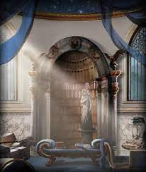
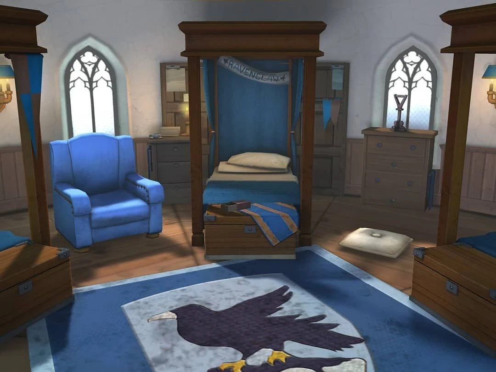

WELCOME TO RAVENCLAW'S HOUSE, STRANGER!
1. History
2. Traits
3. Reputation
4. Ravenclaw Dungeon
5. Commom Room
6. Dormitories
7. Head of House
8. Famous students of Ravenclaw
9. Etymology
10. House Overview
Ravenclaw is one of the four houses at Hogwarts School of Witchcraft and Wizardry, as depicted in J.K. Rowling's Harry Potter series. Founded by Rowena Ravenclaw, the house is known for its emphasis on wisdom, intelligence, creativity, and learning. Here's a brief history of Ravenclaw:
Founding of Ravenclaw: Ravenclaw was founded by Rowena Ravenclaw, a highly intelligent witch, along with the other three founders of Hogwarts: Godric Gryffindor, Helga Hufflepuff, and Salazar Slytherin. Rowena valued learning and intellect above all else and sought students with sharp minds to join her house.
Location and Traits: Ravenclaw House is located in one of the towers of Hogwarts Castle. The entrance to the common room is a door with a bronze knocker shaped like an eagle. The house mascot is the eagle, and its colors are blue and silver. Students sorted into Ravenclaw are known for their wit, curiosity, love of knowledge, and creativity.
The Sorting Hat: After the founders established their respective houses, Rowena Ravenclaw enchanted her diadem, or tiara, to enhance the wearer's wisdom. It became known as the "Lost Diadem of Ravenclaw." The Sorting Hat, used to assign students to houses, was also made by Rowena Ravenclaw.
The Grey Lady: Rowena's daughter, Helena Ravenclaw, is known as the Grey Lady. She stole her mother's diadem and fled to Albania to hide it. Eventually, the diadem was turned into one of Voldemort's Horcruxes. Helena's ghost continued to reside at Hogwarts and played a crucial role in the events of Harry Potter and the Deathly Hallows.
House Traits and Reputation: Ravenclaw is known for its academically inclined students. They excel in subjects that require intellectual prowess, such as charms, transfiguration, potions, and ancient runes. Ravenclaws value wit, wisdom, and original thinking. They are often found in the Hogwarts library or pursuing intellectual pursuits.
House Founder's Portrait: The portrait of Rowena Ravenclaw hangs in the Ravenclaw common room. In the movies, the entrance to the common room is accessed by answering a riddle posed by a bronze eagle-shaped knocker.
House Cup: Like the other Hogwarts houses, Ravenclaw competes for the House Cup, which is awarded based on academic achievement, points earned through good behavior, and success in Quidditch matches.
Throughout the Harry Potter series, Ravenclaw students, including notable characters like Luna Lovegood, Cho Chang, and Filius Flitwick, play significant roles in the story, contributing their intelligence and unique perspectives to the wizarding world.

Ravenclaw is known for its distinct traits and characteristics that are valued within the house. Here are some of the key traits associated with Ravenclaw:
Intelligence: Ravenclaw students are renowned for their intellectual abilities. They possess sharp minds, are naturally curious, and have a thirst for knowledge. They are often seen as academic high-achievers who excel in their studies.
Wisdom: Along with intelligence, Ravenclaws value wisdom. They have a deep understanding of various subjects and possess the ability to apply their knowledge in practical and insightful ways. They are often known for their wise decision-making and analytical thinking.
Creativity: Ravenclaw students have a strong sense of imagination and creativity. They often think outside the box, coming up with innovative solutions and ideas. Their creative thinking allows them to approach problems from unique angles, enabling them to find unconventional solutions.
Love of Learning: Ravenclaws have a genuine love for learning and a thirst for acquiring new knowledge. They actively seek out opportunities to expand their understanding and explore new areas of study. They are often found in libraries, engrossed in books, or engaging in intellectual discussions.
Wit and Cleverness: Ravenclaws are known for their quick wit and cleverness. They possess a sharp sense of humor and enjoy engaging in intellectual banter. Their ability to think on their feet and come up with witty remarks or retorts is often admired by others.
Individuality: Ravenclaws appreciate and celebrate individuality. They value diversity of thought and respect the unique perspectives and ideas of others. They are often open-minded and accepting of different viewpoints, fostering an environment of intellectual discourse within the house.
Quirkiness: Ravenclaws are often portrayed as having eccentric or quirky traits. They embrace their individual quirks and are unafraid to express themselves in unconventional ways. This quirkiness adds to their charm and makes them stand out among the other houses.
Ravenclaw is renowned for its academic excellence, wit, and wisdom. Students in Ravenclaw exhibit sharp minds, creativity, and a love for learning. Known for their cleverness and quick thinking, Ravenclaws excel in problem-solving and engage in intellectual discourse. They celebrate individuality and are unafraid to express themselves uniquely. Their contributions to the wizarding world are marked by their intelligence, creativity, and wise decision-making. Overall, Ravenclaw is recognized as the house of intellectual prowess and a haven for those who value knowledge and original thinking.
Ravenclaw House does not have a dungeon. Instead, it has a unique and cozy common room located in one of the towers of Hogwarts Castle. The circular room offers stunning views, and its decor reflects the house colors of blue and silver. It serves as a space for Ravenclaw students to study, relax, and engage in intellectual discussions.
The Ravenclaw common room is a circular space located in a tower at Hogwarts Castle. Accessible by solving a riddle, it offers a breathtaking view through tall windows. Decorated in blue and silver, the room is cozy and features bookcases filled with ancient texts. It is a hub for intellectual pursuits, fostering discussions, studying, and relaxation. The common room encourages curiosity, creativity, and wisdom, serving as a gathering place for Ravenclaw students to exchange ideas and pursue knowledge in a welcoming and intellectually stimulating environment.
The Ravenclaw dormitories are located in a tower at Hogwarts Castle and provide a private space for students of Ravenclaw House to rest and recharge. Accessible through a riddle, they are designed with comfort and tranquility in mind, featuring blue and silver decor. Each student has their own individual sleeping quarters and study areas within the dormitories. The dormitories foster a sense of community among Ravenclaw students and support their intellectual pursuits. They contribute to the overall well-being and personal growth of the students.
Notable students from Hufflepuff House at Hogwarts include Cedric Diggory, Nymphadora Tonks, Pomona Sprout, Newt Scamander, Ernie Macmillan, Hannah Abbott, and Susan Bones. Hufflepuffs are known for their loyalty and hard work, and these individuals have made significant contributions to the wizarding world through their bravery, talents, and dedication.
Notable students from Ravenclaw House at Hogwarts include Luna Lovegood, Cho Chang, Gilderoy Lockhart, Padma Patil, and Professor Filius Flitwick. Ravenclaws are known for their intelligence, wisdom, and creativity. These individuals have made significant contributions to the wizarding world through their unique traits, skills, and achievements.
The name "Ravenclaw" for the Hogwarts house represents the combination of wisdom and intellectual prowess. "Raven" symbolizes intelligence and curiosity, while "claw" represents strength and the ability to grasp knowledge. The name reflects the traits and values of Ravenclaw students, who are known for their intelligence, creativity, and a thirst for knowledge.